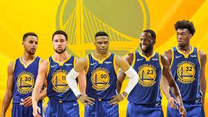
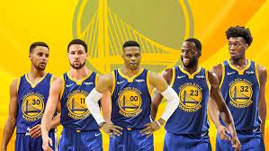

page3
 

Golden State Warriors
[The Golden State Warriors are an American professional basketball team based in San Francisco. The Warriors compete in the National Basketball Association (NBA), as a member of the league's Western Conference Pacific Division. Founded in 1946 in Philadelphia, the Warriors moved to the San Francisco Bay Area in 1962 and took the city's name, before changing its geographic moniker to Golden State in 1971.[a][b] The club plays its home games at the Chase Center. The Warriors won the inaugural Basketball Association of America (BAA) championship in 1947,[c] and won again in 1956, led by Hall of Fame trio Paul Arizin, Tom Gola, and Neil Johnston. After the trade of star Wilt Chamberlain in January 1965, the team finished the 1964–65 season with the NBA's worst record (17–63). Their rebuilding period was brief due in large part to the Warriors drafting of Rick Barry four months after the trade. In 1975, star players Barry and Jamaal Wilkes powered the Warriors to their third championship, widely considered one of the biggest upsets in NBA history.]